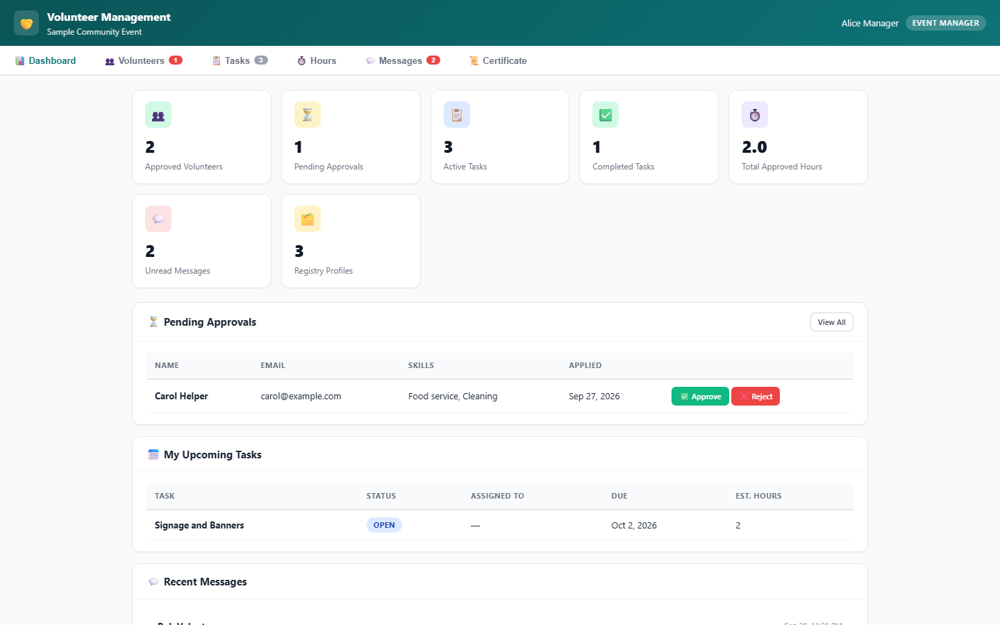
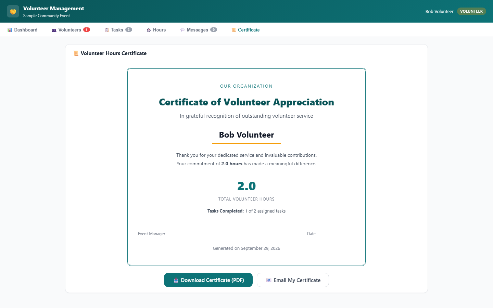
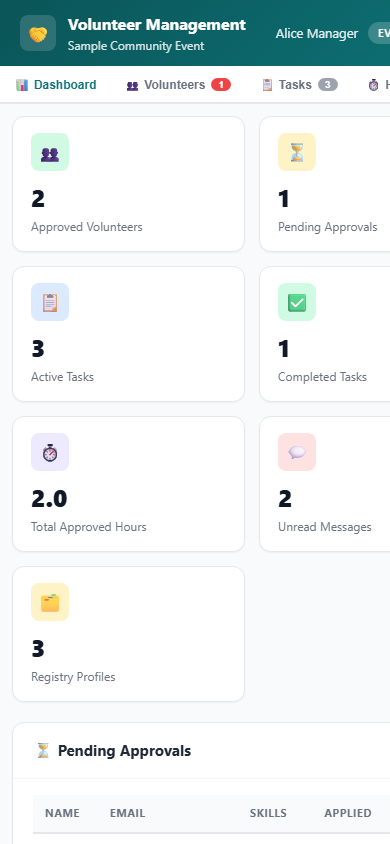

Event managers coordinate volunteers end to end - applications, approvals, tasks, hours, messaging and certificates - right on the event page your team already uses.
Recruit, schedule, track and thank - without leaving your CMS.
Every volunteer profile lives once - each event reuses the same list, so skills and contact data are never re-entered.
Volunteers apply for an event; managers see every pending application and approve or reject with one click.
Create tasks, assign them to approved volunteers and watch each one move from open to in-progress to completed.
Volunteers log hours per task; managers approve them. The dashboard shows every total in real time.
Volunteers and managers talk inside the tool, with unread badges and per-event history.
Every approved volunteer gets a PDF certificate with their total hours and completed tasks - download or email.

The dashboard shows approved volunteers, pending approvals, active tasks and total hours - with a pending-approvals list that managers can clear in one click.

At the end of the event, volunteers generate their own certificate showing approved hours and completed tasks - ready to download as PDF or send by email.

The same tool fits a phone - volunteers can register, check tasks and log hours from the event floor.
One tool instance on the event page - no new system to learn.
People with access to the event page apply with their skills and availability.
Approve applications, create tasks and assign them with due dates.
Volunteers log hours, managers approve them, certificates are generated at the end.
One place for the whole volunteer lifecycle.
| The usual way | Volunteer Management | |
|---|---|---|
| Volunteer list | ✕ A spreadsheet per event, re-entered every time | ✓ One shared registry reused by every event |
| Approvals | ✕ Reply-all email threads | ✓ One-click approve or reject in the tool |
| Hours | ✕ Manual tallies at the end | ✓ Logged, approved and totaled automatically |
"Approvals that used to take a week of emails now happen the same afternoon."
Community event coordinator"Volunteers finally get a proper certificate at the end - they talk about it all year."
Volunteer coordinator, nonprofit"The shared registry means our regulars are one click away for the next event."
Charity program managerEach event gets its own tool instance, so its volunteers, tasks and hours stay separate. The volunteer registry is shared, so a volunteer who helped before is already known at your next event.
Yes - anyone with access to the event page can submit a registration. Managers approve or reject each application.
A volunteer hours certificate with their total approved hours and completed tasks, downloadable as PDF or sent by email.
Browse real screenshots of Volunteer Management with sample data - click any image to open it full size.
Screenshots show the tool with mock data - the real tool connects to your own account. Get Volunteer Management
Open Volunteer Management on your event page and start today - the registry remembers your volunteers for the next one.
Start with your next event